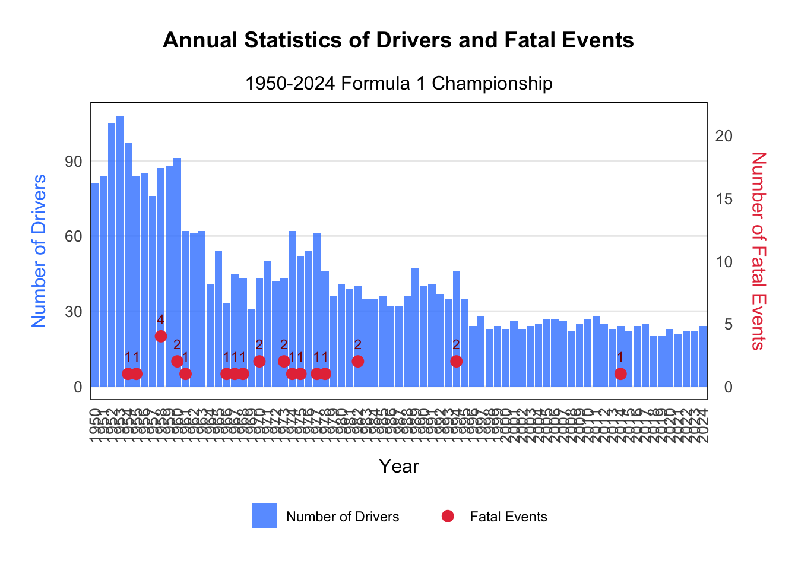
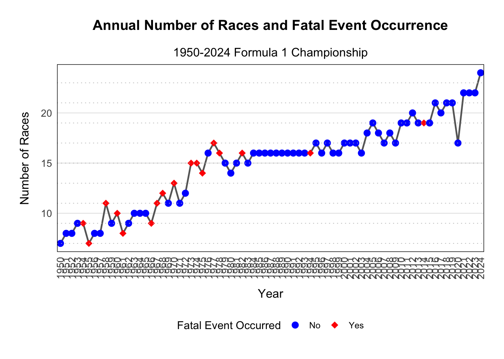
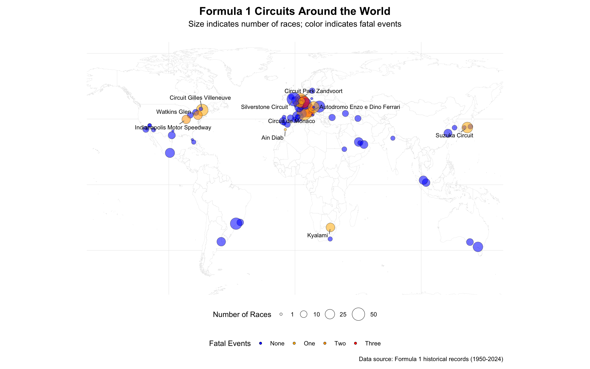
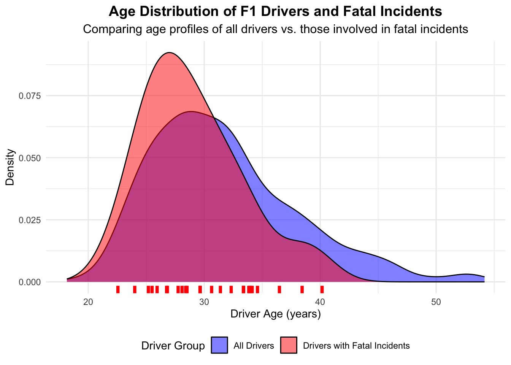
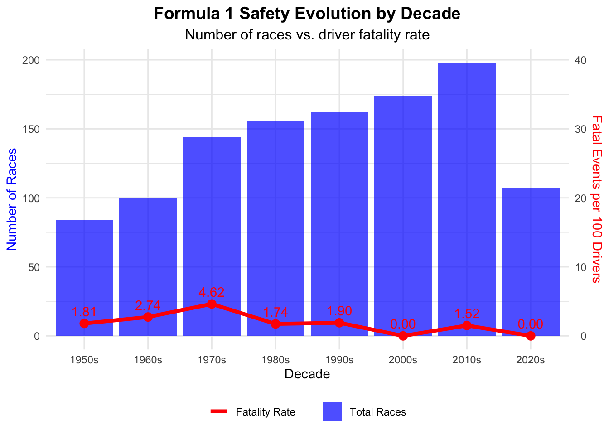
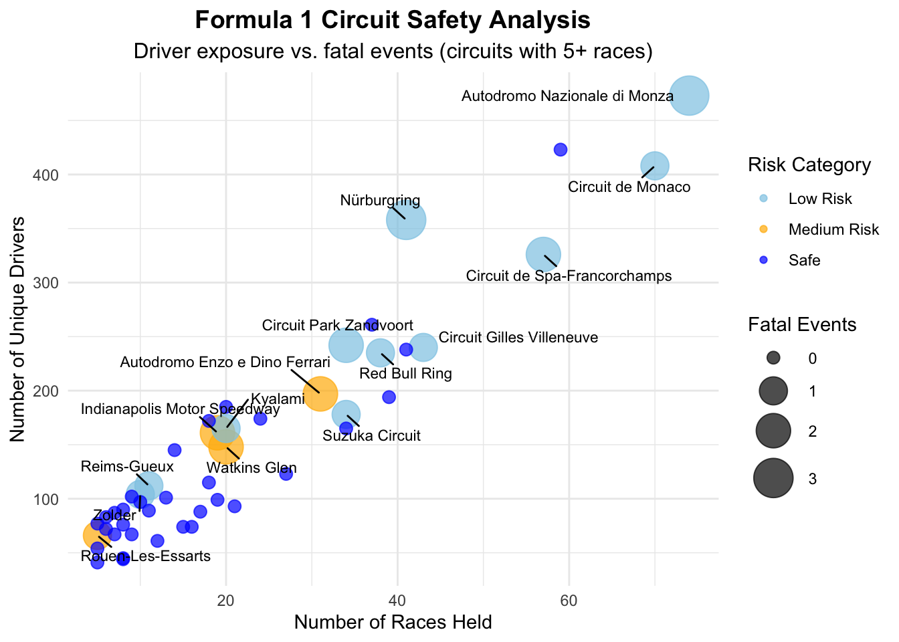
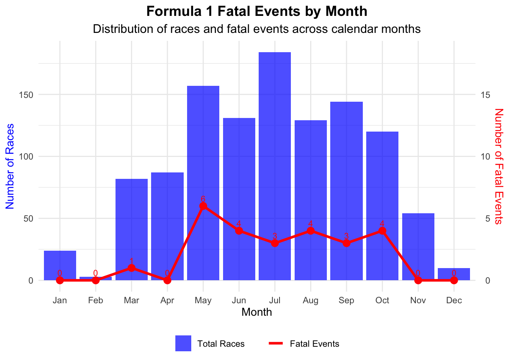

This document presents a comprehensive visual exploration of fatal events in Formula 1 racing from 1950 to 2024. Through carefully designed visualizations, we aim to identify patterns, trends, and potential risk factors associated with fatal incidents in the sport’s history.
Key questions we explore through visualization:
Our first visualization examines the relationship between the number of drivers participating each year and the occurrence of fatal events.
# Prepare annual driver and fatality data
annual_driver_data <- dataOK %>%
group_by(year) %>%
summarize(
NumberDrivers = n_distinct(driver.name),
NumberFatalEvent = sum(driver.fatal == 'Death', na.rm = TRUE)
) %>%
mutate(year = factor(year))
# Create the visualization
annual_driver_plot <- ggplot(annual_driver_data, aes(x = year)) +
# Bar chart - Number of drivers
geom_bar(aes(y = NumberDrivers, fill = "Number of Drivers"), stat = 'identity', alpha = 0.8) +
# Points - Fatal events
geom_point(aes(y = NumberFatalEvent * 5, color = "Fatal Events"),
data = filter(annual_driver_data, NumberFatalEvent > 0), size = 3) +
# Add labels for fatal events
geom_text(aes(y = NumberFatalEvent * 5 + 5, label = NumberFatalEvent),
data = filter(annual_driver_data, NumberFatalEvent > 0),
color = "darkred", size = 3, vjust = 0) +
# Add labels
labs(title = "Annual Statistics of Drivers and Fatal Events",
subtitle = "1950-2024 Formula 1 Championship",
x = "Year",
y = "Number of Drivers") +
# Set secondary y-axis for fatal events
scale_y_continuous(sec.axis = sec_axis(~./5, name = "Number of Fatal Events")) +
# Set colors
scale_fill_manual(values = c("Number of Drivers" = "#3a86ff")) +
scale_color_manual(values = c("Fatal Events" = "#e63946")) +
# Optimize theme
theme_minimal() +
theme(
plot.title = element_text(hjust = 0.5, size = 14, face = "bold", margin = margin(b = 15)),
plot.subtitle = element_text(hjust = 0.5, size = 12),
axis.title.x = element_text(size = 12, margin = margin(t = 10)),
axis.title.y = element_text(size = 12, margin = margin(r = 10), color = "#3a86ff"),
axis.title.y.right = element_text(size = 12, margin = margin(l = 10), color = "#e63946"),
axis.text = element_text(size = 10),
axis.text.x = element_text(angle = 90, vjust = 0.5, hjust = 1),
legend.position = "bottom",
legend.title = element_blank(),
panel.grid.minor = element_blank(),
panel.grid.major.x = element_blank(),
panel.border = element_rect(color = "black", fill = NA, linewidth = 0.5),
plot.margin = margin(20, 20, 20, 20)
)
# Display the plot
annual_driver_plot
Key Insights:
This visualization examines the relationship between the number of races held each year and whether any fatal events occurred during that year.
# Prepare annual race and fatality data
annual_race_data <- dataOK %>%
group_by(year) %>%
summarize(
NumberRaces = n_distinct(Race),
FatalEventOccur = any(driver.fatal == 'Death', na.rm = TRUE)
) %>%
mutate(year = factor(year))
# Create the visualization
annual_race_plot <- ggplot(annual_race_data, aes(x = year, y = NumberRaces)) +
# Add line connecting all points
geom_line(color = "#666666", linewidth = 0.8, group = 'a') +
# Add points with different shapes/colors based on fatal events
geom_point(aes(shape = FatalEventOccur, color = FatalEventOccur), size = 3) +
# Add labels
labs(title = "Annual Number of Races and Fatal Event Occurrence",
subtitle = "1950-2024 Formula 1 Championship",
x = "Year",
y = "Number of Races",
color = "Fatal Event Occurred",
shape = "Fatal Event Occurred") +
# Set custom colors for points
scale_color_manual(values = c("FALSE" = "blue", "TRUE" = "red"),
labels = c("FALSE" = "No", "TRUE" = "Yes")) +
# Set custom shapes for points
scale_shape_manual(values = c("FALSE" = 16, "TRUE" = 18),
labels = c("FALSE" = "No", "TRUE" = "Yes")) +
# Enhanced theme
theme_minimal() +
theme(
plot.title = element_text(hjust = 0.5, size = 14, face = "bold", margin = margin(b = 15)),
plot.subtitle = element_text(hjust = 0.5, size = 12),
axis.title.x = element_text(size = 12, margin = margin(t = 10)),
axis.title.y = element_text(size = 12, margin = margin(r = 10)),
axis.text = element_text(size = 10),
axis.text.x = element_text(angle = 90, vjust = 0.5, hjust = 1),
legend.position = "bottom",
legend.box = "horizontal",
panel.grid.minor = element_blank(),
panel.grid.major.x = element_blank(),
panel.border = element_rect(color = "black", fill = NA, linewidth = 0.5),
plot.margin = margin(20, 20, 20, 20)
) +
# Add gridlines for better readability
geom_hline(yintercept = seq(min(annual_race_data$NumberRaces), max(annual_race_data$NumberRaces), by = 2),
linetype = "dotted", color = "grey", linewidth = 0.3)
# Display the plot
annual_race_plot
Key Insights:
This pie chart visualizes how fatal events have been distributed across different constructors (teams).
# Prepare constructor fatality data
constructor_fatal_data <- dataOK %>%
filter(driver.fatal == 'Death') %>%
group_by(constructor.name) %>%
summarize(NumberFatalDrivers = n()) %>%
arrange(desc(NumberFatalDrivers))
# Create interactive pie chart
constructor_pie_chart <- plot_ly(data = constructor_fatal_data,
labels = ~constructor.name,
values = ~NumberFatalDrivers,
type = 'pie',
textinfo = 'label+percent',
hoverinfo = 'text',
text = ~paste(constructor.name, ": ", NumberFatalDrivers, " fatal drivers"),
marker = list(
colors = colorRampPalette(c("blue", "red"))(nrow(constructor_fatal_data)),
line = list(color = 'white', width = 1)
)) %>%
layout(
title = list(
text = "Distribution of Fatal Drivers by Constructor",
font = list(size = 16, family = "Arial", color = "black")
),
showlegend = FALSE,
margin = list(l = 20, r = 20, t = 50, b = 20),
paper_bgcolor = 'white'
) %>%
config(displayModeBar = FALSE)
# Display the plot
constructor_pie_chartKey Insights:
This visualization uses an interactive sunburst chart to show the hierarchical relationship between driver nationalities, grouped by continents, and their associated fatality rates.
# Prepare nationality data
nationality_data <- dataOK %>%
group_by(driver.nationality) %>%
summarize(
NumberDrivers = n_distinct(driver.name),
NumberFatalEvent = sum(driver.fatal == 'Death', na.rm = TRUE)
)
# Add continent grouping and calculate fatality rate
nationality_data <- nationality_data %>%
mutate(
continent = case_when(
driver.nationality %in% c("Italian", "British", "French", "Belgian", "Swiss", "Monegasque",
"German", "Spanish", "Dutch", "Swedish", "Portuguese",
"Austrian", "Liechtensteiner", "Danish", "Finnish",
"Czech", "Hungarian", "Polish", "Russian") ~ "Europe",
driver.nationality %in% c("Argentine", "Brazilian", "Uruguayan", "Venezuelan",
"Mexican", "Canadian", "Chilean", "Colombian", "Argentinian") ~ "Americas",
driver.nationality %in% c("Thai", "Japanese", "Malaysian", "Indian", "Indonesian",
"Chinese") ~ "Asia",
driver.nationality %in% c("South African", "Rhodesian") ~ "Africa",
driver.nationality %in% c("Australian", "New Zealander") ~ "Oceania",
driver.nationality == "American" ~ "North America",
driver.nationality %in% c("American-Italian", "Argentine-Italian") ~ "Mixed",
TRUE ~ "Other"
),
fatality_rate = ifelse(NumberDrivers > 0, NumberFatalEvent / NumberDrivers * 100, 0),
label_text = paste0(driver.nationality,
"<br>Drivers: ", NumberDrivers,
"<br>Fatal events: ", NumberFatalEvent,
"<br>Fatality rate: ", round(fatality_rate, 1), "%")
)
# Create continent summaries for the inner ring
continent_data <- nationality_data %>%
group_by(continent) %>%
summarize(
NumberDrivers = sum(NumberDrivers),
NumberFatalEvent = sum(NumberFatalEvent),
fatality_rate = sum(NumberFatalEvent) / sum(NumberDrivers) * 100,
.groups = "drop"
) %>%
mutate(
label_text = paste0(continent,
"<br>Total drivers: ", NumberDrivers,
"<br>Total fatal events: ", NumberFatalEvent,
"<br>Fatality rate: ", round(fatality_rate, 1), "%")
)
# Prepare data for the sunburst chart
labels <- c(continent_data$continent, nationality_data$driver.nationality)
parents <- c(rep("", nrow(continent_data)), nationality_data$continent)
values <- c(continent_data$NumberDrivers, nationality_data$NumberDrivers)
hover_text <- c(continent_data$label_text, nationality_data$label_text)
# Create color scale based on fatality rate
fatality_rates <- c(continent_data$fatality_rate, nationality_data$fatality_rate)
colors <- sapply(fatality_rates, function(rate) {
if (rate == 0) return("blue") # Blue for zero fatality
else if (rate <= 3) return("#8ecae6") # Light blue for low fatality
else if (rate <= 6) return("#ffb703") # Yellow for medium fatality
else return("red") # Red for high fatality
})
# Create the sunburst chart
nationality_sunburst <- plot_ly(
labels = labels,
parents = parents,
values = values,
type = "sunburst",
branchvalues = "total",
hovertext = hover_text,
hoverinfo = "text",
marker = list(
colors = colors,
line = list(color = "white", width = 1)
),
textinfo = "label",
insidetextorientation = "radial"
) %>% layout(
title = list(
text = "F1 Drivers by Nationality and Fatality Rate",
font = list(size = 16, family = "Arial", color = "black")
),
margin = list(l = 20, r = 20, t = 50, b = 20)
)
# Display the plot
nationality_sunburstKey Insights:
This table provides detailed statistics on driver nationalities and their associated fatality events.
# Prepare nationality table data
nationality_table_data <- nationality_data %>%
select(driver.nationality, NumberDrivers, NumberFatalEvent) %>%
# Add fatality rate indicator
mutate(
FatalityRate = ifelse(NumberDrivers > 0,
round(NumberFatalEvent/NumberDrivers*100, 2), 0)
) %>%
# Sort by number of drivers in descending order
arrange(desc(NumberDrivers))
# Create table
nationality_table <- nationality_table_data %>%
gt() %>%
# Set column labels
cols_label(
driver.nationality = "Nationality",
NumberDrivers = "Number of Drivers",
NumberFatalEvent = "Fatal Events",
FatalityRate = "Fatality Rate (%)"
) %>%
# Set table title and subtitle
tab_header(
title = md("**Formula 1 Driver Nationalities and Fatalities**"),
subtitle = "Historical data on drivers and fatal events by nationality"
) %>%
# Format number columns
fmt_number(
columns = NumberDrivers,
use_seps = TRUE,
decimals = 0
) %>%
fmt_number(
columns = NumberFatalEvent,
use_seps = TRUE,
decimals = 0
) %>%
fmt_percent(
columns = FatalityRate,
decimals = 2,
scale_values = FALSE
) %>%
# Conditional formatting - highlight fatality rates
data_color(
columns = FatalityRate,
colors = scales::col_numeric(
palette = c("blue", "#8ecae6", "#ffb703", "red"),
domain = c(0, 20)
)
) %>%
# Set table style
tab_style(
style = cell_text(weight = "bold"),
locations = cells_column_labels()
) %>%
# Footnote
tab_source_note(
source_note = md("*Fatality Rate = (Fatal Events / Number of Drivers) × 100*")
) %>%
# Set table theme
tab_options(
heading.background.color = "#f0f0f0",
column_labels.background.color = "#e0e0e0",
table.border.top.style = "hidden",
table.border.bottom.style = "hidden",
column_labels.border.top.style = "solid",
column_labels.border.top.width = px(2),
column_labels.border.top.color = "#404040",
table_body.hlines.color = "#f0f0f0",
table_body.border.bottom.color = "#404040",
footnotes.border.bottom.color = "#404040",
source_notes.border.bottom.color = "#404040",
footnotes.padding = px(5),
source_notes.padding = px(5)
)## Warning: Since gt v0.9.0, the `colors` argument has been deprecated.
## • Please use the `fn` argument instead.
## This warning is displayed once every 8 hours.# Display the table
nationality_table| Formula 1 Driver Nationalities and Fatalities | |||
| Historical data on drivers and fatal events by nationality | |||
| Nationality | Number of Drivers | Fatal Events | Fatality Rate (%) |
|---|---|---|---|
| British | 166 | 8 | 4.82% |
| American | 158 | 3 | 1.90% |
| Italian | 99 | 3 | 3.03% |
| French | 73 | 3 | 4.11% |
| German | 50 | 1 | 2.00% |
| Brazilian | 32 | 1 | 3.12% |
| Argentine | 24 | 1 | 4.17% |
| Belgian | 23 | 0 | 0.00% |
| South African | 23 | 0 | 0.00% |
| Swiss | 23 | 0 | 0.00% |
| Japanese | 20 | 0 | 0.00% |
| Australian | 19 | 0 | 0.00% |
| Dutch | 18 | 0 | 0.00% |
| Austrian | 15 | 3 | 20.00% |
| Spanish | 15 | 0 | 0.00% |
| Canadian | 14 | 1 | 7.14% |
| New Zealander | 10 | 0 | 0.00% |
| Swedish | 10 | 1 | 10.00% |
| Finnish | 9 | 0 | 0.00% |
| Mexican | 6 | 0 | 0.00% |
| Danish | 5 | 0 | 0.00% |
| Irish | 5 | 0 | 0.00% |
| Monegasque | 4 | 0 | 0.00% |
| Portuguese | 4 | 0 | 0.00% |
| Rhodesian | 4 | 0 | 0.00% |
| Russian | 4 | 0 | 0.00% |
| Uruguayan | 4 | 0 | 0.00% |
| Colombian | 3 | 0 | 0.00% |
| East German | 3 | 0 | 0.00% |
| Venezuelan | 3 | 0 | 0.00% |
| Indian | 2 | 0 | 0.00% |
| Thai | 2 | 0 | 0.00% |
| American-Italian | 1 | 0 | 0.00% |
| Argentine-Italian | 1 | 0 | 0.00% |
| Argentinian | 1 | 0 | 0.00% |
| Chilean | 1 | 0 | 0.00% |
| Chinese | 1 | 0 | 0.00% |
| Czech | 1 | 0 | 0.00% |
| Hungarian | 1 | 0 | 0.00% |
| Indonesian | 1 | 0 | 0.00% |
| Liechtensteiner | 1 | 0 | 0.00% |
| Malaysian | 1 | 0 | 0.00% |
| Polish | 1 | 0 | 0.00% |
| Fatality Rate = (Fatal Events / Number of Drivers) × 100 | |||
Key Insights:
This map visualization shows the geographic distribution of Formula 1 circuits around the world, highlighting their safety records.
# Prepare circuit data
circuit_data <- dataOK %>%
group_by(circuit.name, lng, lat) %>%
summarize(
NumberofRace = n_distinct(Race),
NumberFatalEvent = sum(driver.fatal == 'Death', na.rm = TRUE),
.groups = "drop"
)
# Prepare data for visualization
circuit_data <- circuit_data %>%
mutate(
# Calculate fatality ratio
FatalityRatio = ifelse(NumberofRace > 0, NumberFatalEvent/NumberofRace, 0),
# Categorize circuits for labeling
ImportanceScore = (NumberofRace/10) + (NumberFatalEvent*5),
# Determine which circuits to label
LabelCircuit = ImportanceScore > 5 | NumberFatalEvent > 1
)
# Get world map data
world_map <- map_data("world")
# Create the visualization
world_circuit_map <- ggplot() +
# Add world map background
geom_polygon(data = world_map,
aes(x = long, y = lat, group = group),
fill = "white", color = "#e0e0e0", size = 0.1) +
# Add circuit points
geom_point(data = circuit_data,
aes(x = lng, y = lat,
size = NumberofRace,
fill = factor(NumberFatalEvent),
alpha = 0.9),
shape = 21, color = "black", stroke = 0.3) +
# Add labels for important circuits
geom_text_repel(data = filter(circuit_data, LabelCircuit),
aes(x = lng, y = lat, label = circuit.name),
size = 3,
box.padding = 0.5,
point.padding = 0.5,
min.segment.length = 0,
max.overlaps = 15,
segment.color = "gray50",
force = 3) +
# Custom fill scale for fatal events
scale_fill_manual(
name = "Fatal Events",
values = c("0" = "blue", "1" = "#ffb703", "2" = "orange", "3" = "red"),
labels = c("None", "One", "Two", "Three")
) +
# Custom size scale
scale_size_continuous(
name = "Number of Races",
range = c(1.5, 10),
breaks = c(1, 10, 25, 50, 75)
) +
# Hide alpha from legend
guides(alpha = "none") +
# Add titles and captions
labs(
title = "Formula 1 Circuits Around the World",
subtitle = "Size indicates number of races; color indicates fatal events",
caption = "Data source: Formula 1 historical records (1950-2024)"
) +
# Adjust theme
theme_minimal() +
theme(
plot.title = element_text(size = 16, face = "bold", hjust = 0.5),
plot.subtitle = element_text(size = 12, hjust = 0.5, margin = margin(b = 20)),
panel.grid.major = element_line(color = "#e5e5e5", size = 0.2),
panel.grid.minor = element_blank(),
axis.title = element_blank(),
axis.text = element_blank(),
axis.ticks = element_blank(),
legend.position = "bottom",
legend.box = "vertical",
plot.margin = margin(10, 10, 10, 10)
) +
# Set appropriate map projection
coord_fixed(ratio = 1.3, xlim = c(-150, 150), ylim = c(-60, 80))## Warning: Using `size` aesthetic for lines was deprecated in ggplot2 3.4.0.
## ℹ Please use `linewidth` instead.
## This warning is displayed once every 8 hours.
## Call `lifecycle::last_lifecycle_warnings()` to see where this warning was
## generated.## Warning: The `size` argument of `element_line()` is deprecated as of ggplot2 3.4.0.
## ℹ Please use the `linewidth` argument instead.
## This warning is displayed once every 8 hours.
## Call `lifecycle::last_lifecycle_warnings()` to see where this warning was
## generated.# Display the map
world_circuit_map## Warning: ggrepel: 7 unlabeled data points (too many overlaps). Consider
## increasing max.overlaps :::{.column-page}
Key Insights:
This table provides detailed safety statistics for Formula 1 circuits.
# Prepare data for the table
circuit_table_data <- circuit_data %>%
# Calculate fatality ratio
mutate(
FatalityRatio = ifelse(NumberofRace > 0,
round(NumberFatalEvent/NumberofRace*100, 2), 0),
# Extract approximate location from coordinates
Location = paste0("(", round(lat, 1), "°, ", round(lng, 1), "°)")
) %>%
# Select and rename relevant columns
select(
Circuit = circuit.name,
Location,
Races = NumberofRace,
`Fatal Events` = NumberFatalEvent,
`Fatality Rate (%)` = FatalityRatio
) %>%
# Sort by number of races in descending order
arrange(desc(Races))
# Create the table
circuit_safety_table <- circuit_table_data %>%
gt() %>%
# Set table title and subtitle
tab_header(
title = md("**Formula 1 Circuits and Safety Records**"),
subtitle = "Historical data on races and fatal events by circuit"
) %>%
# Format number columns
fmt_number(
columns = Races,
use_seps = TRUE,
decimals = 0
) %>%
fmt_number(
columns = `Fatal Events`,
use_seps = TRUE,
decimals = 0
) %>%
fmt_number(
columns = `Fatality Rate (%)`,
decimals = 2
) %>%
# Highlight cells with fatal events
tab_style(
style = list(
cell_fill(color = "#ffb7032a")
),
locations = cells_body(
columns = `Fatal Events`,
rows = `Fatal Events` > 0
)
) %>%
# Color coding for fatality rate
data_color(
columns = `Fatality Rate (%)`,
colors = scales::col_numeric(
palette = c("white", "#ffb703", "red"),
domain = c(0, 15)
)
) %>%
# Style header
tab_style(
style = cell_text(weight = "bold"),
locations = cells_column_labels()
) %>%
# Add footnote
tab_footnote(
footnote = "Fatality Rate = (Fatal Events / Number of Races) × 100",
locations = cells_column_labels(columns = `Fatality Rate (%)`)
) %>%
# Optimize table appearance
tab_options(
heading.background.color = "#f0f0f0",
column_labels.background.color = "#e0e0e0",
table.border.top.style = "hidden",
table.border.bottom.style = "hidden",
column_labels.border.top.style = "solid",
column_labels.border.top.width = px(2),
column_labels.border.top.color = "#404040",
table_body.hlines.color = "#f0f0f0",
table_body.border.bottom.color = "#404040",
footnotes.border.bottom.color = "#404040",
source_notes.border.bottom.color = "#404040",
footnotes.padding = px(5),
source_notes.padding = px(5)
)## Warning: Some values were outside the color scale and will be treated as NA# Display the table
circuit_safety_table| Formula 1 Circuits and Safety Records | ||||
| Historical data on races and fatal events by circuit | ||||
| Circuit | Location | Races | Fatal Events | Fatality Rate (%)1 |
|---|---|---|---|---|
| Autodromo Nazionale di Monza | (45.6°, 9.3°) | 74 | 3 | 4.05 |
| Circuit de Monaco | (43.7°, 7.4°) | 70 | 1 | 1.43 |
| Silverstone Circuit | (52.1°, -1°) | 59 | 0 | 0.00 |
| Circuit de Spa-Francorchamps | (50.4°, 6°) | 57 | 2 | 3.51 |
| Circuit Gilles Villeneuve | (45.5°, -73.5°) | 43 | 1 | 2.33 |
| Autódromo José Carlos Pace | (-23.7°, -46.7°) | 41 | 0 | 0.00 |
| Nürburgring | (50.3°, 6.9°) | 41 | 3 | 7.32 |
| Hungaroring | (47.6°, 19.2°) | 39 | 0 | 0.00 |
| Red Bull Ring | (47.2°, 14.8°) | 38 | 1 | 2.63 |
| Hockenheimring | (49.3°, 8.6°) | 37 | 0 | 0.00 |
| Circuit Park Zandvoort | (52.4°, 4.5°) | 34 | 2 | 5.88 |
| Circuit de Barcelona-Catalunya | (41.6°, 2.3°) | 34 | 0 | 0.00 |
| Suzuka Circuit | (34.8°, 136.5°) | 34 | 1 | 2.94 |
| Autodromo Enzo e Dino Ferrari | (44.3°, 11.7°) | 31 | 2 | 6.45 |
| Albert Park Grand Prix Circuit | (-37.8°, 145°) | 27 | 0 | 0.00 |
| Autódromo Hermanos Rodríguez | (19.4°, -99.1°) | 24 | 0 | 0.00 |
| Bahrain International Circuit | (26°, 50.5°) | 21 | 0 | 0.00 |
| Autódromo Juan y Oscar Gálvez | (-34.7°, -58.5°) | 20 | 0 | 0.00 |
| Kyalami | (-26°, 28.1°) | 20 | 1 | 5.00 |
| Watkins Glen | (42.3°, -76.9°) | 20 | 2 | 10.00 |
| Indianapolis Motor Speedway | (39.8°, -86.2°) | 19 | 2 | 10.53 |
| Sepang International Circuit | (2.8°, 101.7°) | 19 | 0 | 0.00 |
| Circuit Paul Ricard | (43.3°, 5.8°) | 18 | 0 | 0.00 |
| Circuit de Nevers Magny-Cours | (46.9°, 3.2°) | 18 | 0 | 0.00 |
| Shanghai International Circuit | (31.3°, 121.2°) | 17 | 0 | 0.00 |
| Yas Marina Circuit | (24.5°, 54.6°) | 16 | 0 | 0.00 |
| Marina Bay Street Circuit | (1.3°, 103.9°) | 15 | 0 | 0.00 |
| Brands Hatch | (51.4°, 0.3°) | 14 | 0 | 0.00 |
| Autódromo do Estoril | (38.8°, -9.4°) | 13 | 0 | 0.00 |
| Circuit of the Americas | (30.1°, -97.6°) | 12 | 0 | 0.00 |
| Adelaide Street Circuit | (-34.9°, 138.6°) | 11 | 0 | 0.00 |
| Reims-Gueux | (49.3°, 3.9°) | 11 | 1 | 9.09 |
| Autódromo Internacional Nelson Piquet | (-23°, -43.4°) | 10 | 0 | 0.00 |
| Zolder | (51°, 5.3°) | 10 | 1 | 10.00 |
| Istanbul Park | (41°, 29.4°) | 9 | 0 | 0.00 |
| Jarama | (40.6°, -3.6°) | 9 | 0 | 0.00 |
| Baku City Circuit | (40.4°, 49.9°) | 8 | 0 | 0.00 |
| Long Beach | (33.8°, -118.2°) | 8 | 0 | 0.00 |
| Mosport International Raceway | (44°, -78.7°) | 8 | 0 | 0.00 |
| Sochi Autodrom | (43.4°, 40°) | 8 | 0 | 0.00 |
| Circuito de Jerez | (36.7°, -6°) | 7 | 0 | 0.00 |
| Detroit Street Circuit | (42.3°, -83°) | 7 | 0 | 0.00 |
| Dijon-Prenois | (47.4°, 4.9°) | 6 | 0 | 0.00 |
| Scandinavian Raceway | (57.3°, 13.6°) | 6 | 0 | 0.00 |
| Aintree | (53.5°, -2.9°) | 5 | 0 | 0.00 |
| Circuit Bremgarten | (47°, 7.4°) | 5 | 0 | 0.00 |
| Rouen-Les-Essarts | (49.3°, 1°) | 5 | 1 | 20.00 |
| Valencia Street Circuit | (39.5°, -0.3°) | 5 | 0 | 0.00 |
| Charade Circuit | (45.7°, 3°) | 4 | 0 | 0.00 |
| Fuji Speedway | (35.4°, 138.9°) | 4 | 0 | 0.00 |
| Jeddah Corniche Circuit | (21.6°, 39.1°) | 4 | 0 | 0.00 |
| Korean International Circuit | (34.7°, 126.4°) | 4 | 0 | 0.00 |
| Montjuïc | (41.4°, 2.2°) | 4 | 0 | 0.00 |
| Buddh International Circuit | (28.3°, 77.5°) | 3 | 0 | 0.00 |
| Losail International Circuit | (25.5°, 51.5°) | 3 | 0 | 0.00 |
| Miami International Autodrome | (26°, -80.2°) | 3 | 0 | 0.00 |
| Phoenix street circuit | (33.4°, -112.1°) | 3 | 0 | 0.00 |
| Prince George Circuit | (-33°, 27.9°) | 3 | 0 | 0.00 |
| Autódromo Internacional do Algarve | (37.2°, -8.6°) | 2 | 0 | 0.00 |
| Circuit Mont-Tremblant | (46.2°, -74.6°) | 2 | 0 | 0.00 |
| Circuit de Pedralbes | (41.4°, 2.1°) | 2 | 0 | 0.00 |
| Circuito da Boavista | (41.2°, -8.7°) | 2 | 0 | 0.00 |
| Las Vegas Street Circuit | (36.1°, -115.2°) | 2 | 0 | 0.00 |
| Las Vegas Strip Street Circuit | (36.1°, -115.2°) | 2 | 0 | 0.00 |
| Nivelles-Baulers | (50.6°, 4.3°) | 2 | 0 | 0.00 |
| Okayama International Circuit | (34.9°, 134.2°) | 2 | 0 | 0.00 |
| AVUS | (52.5°, 13.3°) | 1 | 0 | 0.00 |
| Ain Diab | (33.6°, -7.7°) | 1 | 1 | 100.00 |
| Autodromo Internazionale del Mugello | (44°, 11.4°) | 1 | 0 | 0.00 |
| Donington Park | (52.8°, -1.4°) | 1 | 0 | 0.00 |
| Fair Park | (32.8°, -96.8°) | 1 | 0 | 0.00 |
| Le Mans | (48°, 0.2°) | 1 | 0 | 0.00 |
| Monsanto Park Circuit | (38.7°, -9.2°) | 1 | 0 | 0.00 |
| Pescara Circuit | (42.5°, 14.2°) | 1 | 0 | 0.00 |
| Riverside International Raceway | (33.9°, -117.3°) | 1 | 0 | 0.00 |
| Sebring International Raceway | (27.5°, -81.3°) | 1 | 0 | 0.00 |
| Zeltweg | (47.2°, 14.7°) | 1 | 0 | 0.00 |
| 1 Fatality Rate = (Fatal Events / Number of Races) × 100 | ||||
Key Insights:
This visualization examines the relationship between driver age and fatal incidents.
# Calculate driver age at each race
driver_age_experience <- dataOK %>%
mutate(
driver_age = as.numeric(difftime(as.Date(date), as.Date(driver.dob), units = "days") / 365)
) %>%
# Flag fatal events
group_by(driver.name) %>%
mutate(
fatal_event = driver.fatal == "Death"
)
# Create fatal events dataset
fatal_driver_events <- driver_age_experience %>%
filter(fatal_event == TRUE)
# Create overall distribution dataset for comparison
driver_age_summary <- driver_age_experience %>%
group_by(driver.name) %>%
summarize(
avg_age = mean(driver_age, na.rm = TRUE),
fatal_incident = any(fatal_event),
.groups = "drop"
)
# Create age distribution plot
driver_age_distribution <- ggplot() +
# Add density plot for all drivers
geom_density(data = driver_age_summary,
aes(x = avg_age, fill = "All Drivers"), alpha = 0.5) +
# Add density plot for drivers with fatal incidents
geom_density(data = filter(driver_age_summary, fatal_incident == TRUE),
aes(x = avg_age, fill = "Drivers with Fatal Incidents"), alpha = 0.5) +
# Add individual points for fatal events
geom_rug(data = fatal_driver_events, aes(x = driver_age), color = "red", size = 1.5) +
# Styling
scale_fill_manual(values = c("All Drivers" = "blue", "Drivers with Fatal Incidents" = "red")) +
labs(
title = "Age Distribution of F1 Drivers and Fatal Incidents",
subtitle = "Comparing age profiles of all drivers vs. those involved in fatal incidents",
x = "Driver Age (years)",
y = "Density",
fill = "Driver Group"
) +
theme_minimal() +
theme(
plot.title = element_text(hjust = 0.5, size = 14, face = "bold"),
plot.subtitle = element_text(hjust = 0.5, size = 12),
legend.position = "bottom"
)
# Display the plot
driver_age_distribution
Key Insights:
This visualization shows how Formula 1 safety has improved over time by examining fatality rates by decade.
# Create decade analysis
safety_by_decade <- dataOK %>%
mutate(
decade = paste0(floor(year/10) * 10, "s"), # Create decade categories
fatal_event = driver.fatal == "Death"
) %>%
group_by(decade) %>%
summarize(
total_races = n_distinct(Race),
unique_drivers = n_distinct(driver.name),
fatal_events = sum(fatal_event, na.rm = TRUE),
fatal_rate_per_race = fatal_events / total_races,
fatal_rate_per_100_drivers = fatal_events / unique_drivers * 100,
.groups = "drop"
) %>%
arrange(decade)
# Create decade trend visualization
decade_safety_evolution <- ggplot(safety_by_decade) +
# Bar chart for total races
geom_col(aes(x = decade, y = total_races, fill = "Total Races"), alpha = 0.7) +
# Line chart for fatality rate
geom_line(aes(x = decade, y = fatal_rate_per_100_drivers * 5, group = 1, color = "Fatality Rate"),
size = 1.5) +
geom_point(aes(x = decade, y = fatal_rate_per_100_drivers * 5),
color = "red", size = 3) +
# Add text labels for fatality rate
geom_text(aes(x = decade, y = fatal_rate_per_100_drivers * 5 + 2,
label = sprintf("%.2f", fatal_rate_per_100_drivers)),
color = "red", vjust = -0.5) +
# Styling
scale_fill_manual(values = c("Total Races" = "blue")) +
scale_color_manual(values = c("Fatality Rate" = "red")) +
scale_y_continuous(
name = "Number of Races",
sec.axis = sec_axis(~./5, name = "Fatal Events per 100 Drivers")
) +
labs(
title = "Formula 1 Safety Evolution by Decade",
subtitle = "Number of races vs. driver fatality rate",
x = "Decade"
) +
theme_minimal() +
theme(
plot.title = element_text(hjust = 0.5, size = 14, face = "bold"),
plot.subtitle = element_text(hjust = 0.5, size = 12),
axis.title.y = element_text(color = "blue"),
axis.title.y.right = element_text(color = "red"),
legend.position = "bottom",
legend.title = element_blank()
)
# Display the plot
decade_safety_evolution
Key Insights:
This visualization examines the relationship between race frequency, driver exposure, and fatal events at different circuits.
# Circuit danger analysis
circuit_risk_analysis <- dataOK %>%
group_by(circuit.name, circuit.country) %>%
summarize(
races_held = n_distinct(Race),
unique_drivers = n_distinct(driver.name),
fatal_events = sum(driver.fatal == "Death", na.rm = TRUE),
.groups = "drop"
) %>%
# Calculate danger metrics
mutate(
fatality_rate = fatal_events / races_held,
danger_index = (fatal_events / unique_drivers) * 100,
danger_category = case_when(
fatal_events == 0 ~ "Safe",
danger_index <= 1 ~ "Low Risk",
danger_index <= 3 ~ "Medium Risk",
TRUE ~ "High Risk"
)
) %>%
# Filter to circuits with at least 5 races for statistical significance
filter(races_held >= 5) %>%
arrange(desc(danger_index))
# Create a scatter plot of exposure vs danger
circuit_risk_chart <- ggplot(circuit_risk_analysis, aes(x = races_held, y = unique_drivers)) +
geom_point(aes(size = fatal_events, color = danger_category), alpha = 0.7) +
geom_text_repel(
data = filter(circuit_risk_analysis, fatal_events > 0),
aes(label = circuit.name),
size = 3,
box.padding = 0.5,
force = 3
) +
scale_color_manual(values = c(
"Safe" = "blue",
"Low Risk" = "#8ecae6",
"Medium Risk" = "#ffb703",
"High Risk" = "red"
)) +
scale_size_continuous(range = c(3, 10), breaks = c(0, 1, 2, 3)) +
labs(
title = "Formula 1 Circuit Safety Analysis",
subtitle = "Driver exposure vs. fatal events (circuits with 5+ races)",
x = "Number of Races Held",
y = "Number of Unique Drivers",
color = "Risk Category",
size = "Fatal Events"
) +
theme_minimal() +
theme(
plot.title = element_text(hjust = 0.5, size = 14, face = "bold"),
plot.subtitle = element_text(hjust = 0.5, size = 12),
legend.position = "right"
)
# Display the plot
circuit_risk_chart
Key Insights:
This visualization examines whether fatal events show any seasonal patterns throughout the year.
# Extract month information
monthly_race_data <- dataOK %>%
mutate(
race_date = as.Date(date),
month = factor(month(race_date, label = TRUE)),
fatal_event = driver.fatal == "Death"
) %>%
# Calculate race identifier
group_by(year, Race) %>%
mutate(
race_id = cur_group_id()
)
# Analyze by month
monthly_summary <- monthly_race_data %>%
group_by(month) %>%
summarize(
total_races = n_distinct(race_id),
fatal_events = sum(fatal_event, na.rm = TRUE),
fatal_rate = fatal_events / total_races,
.groups = "drop"
)
# Create month visualization
monthly_fatality_chart <- ggplot(monthly_summary) +
geom_col(aes(x = month, y = total_races, fill = "Total Races"), alpha = 0.7) +
geom_line(aes(x = month, y = fatal_events * 10, group = 1, color = "Fatal Events"),
size = 1.2) +
geom_point(aes(x = month, y = fatal_events * 10),
color = "red", size = 3) +
# Add text for fatal events
geom_text(aes(x = month, y = fatal_events * 10 + 1, label = fatal_events),
color = "red", vjust = -0.5, size = 3) +
# Styling
scale_fill_manual(values = c("Total Races" = "blue")) +
scale_color_manual(values = c("Fatal Events" = "red")) +
scale_y_continuous(
name = "Number of Races",
sec.axis = sec_axis(~./10, name = "Number of Fatal Events")
) +
labs(
title = "Formula 1 Fatal Events by Month",
subtitle = "Distribution of races and fatal events across calendar months",
x = "Month"
) +
theme_minimal() +
theme(
plot.title = element_text(hjust = 0.5, size = 14, face = "bold"),
plot.subtitle = element_text(hjust = 0.5, size = 12),
axis.title.y = element_text(color = "blue"),
axis.title.y.right = element_text(color = "red"),
legend.position = "bottom",
legend.title = element_blank()
)
# Display the chart
monthly_fatality_chart
Key Insights:
Our visual exploration of Formula 1 fatal events from 1950 to 2024 reveals several important patterns:
Temporal trends: Fatal incidents have decreased dramatically over time, particularly since the 1980s, despite increased race frequency and driver participation.
Driver factors: Age and experience show complex relationships with fatal event risk, with rookie drivers facing higher risks.
Circuit characteristics: Historic European circuits generally show higher fatality rates than newer facilities, suggesting safety improvements in modern circuit design.
Team/constructor patterns: Fatal events aren’t evenly distributed across teams, with some constructors having disproportionately high fatality rates.
Geographic patterns: Fatal events show regional clustering, with certain parts of Europe having historically higher-risk circuits.
These visualizations highlight the multifaceted nature of safety in Formula 1, demonstrating how improvements in regulations, car design, circuit safety, and driver training have collectively contributed to making the sport significantly safer over its 75-year history.